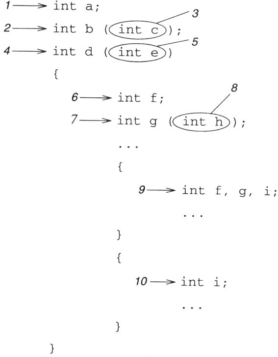
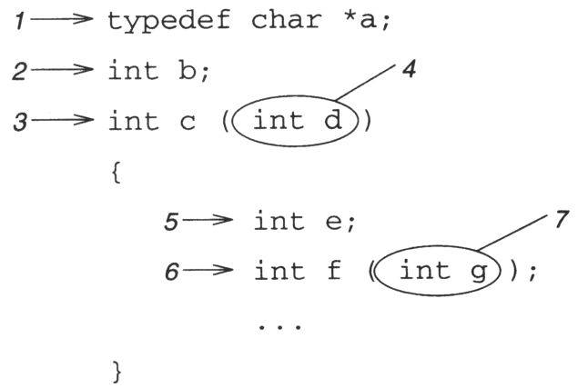
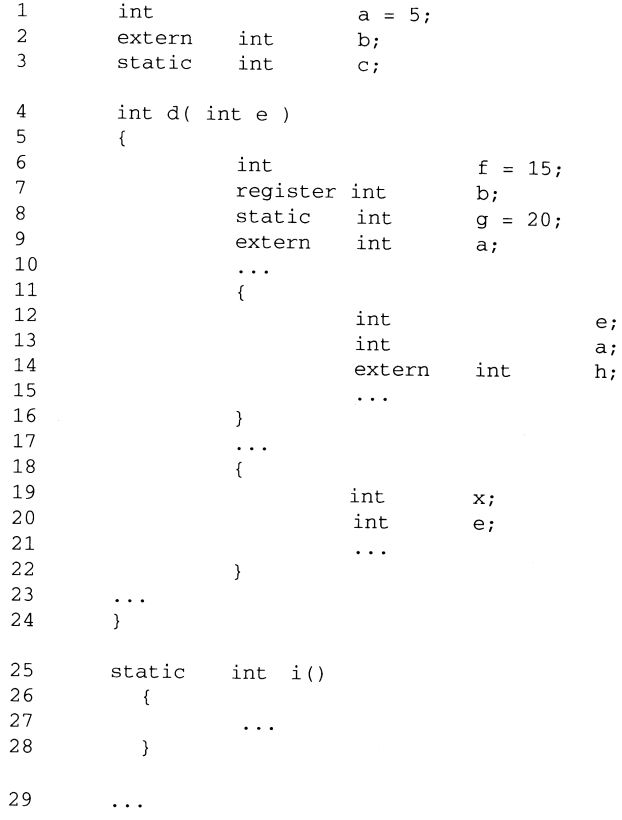

Capítulo 3 Datos
El programa opera con los datos. Este capítulo describirá los datos. Describe sus diversos tipos, describe sus características y cómo declararlo. Este capítulo también describirá los tres atributos de las variables: alcance, atributo de enlace y tipo de almacenamiento. Estas tres propiedades determinan la "visibilidad" (es decir, dónde se puede usar) y la "vida útil" (cuánto tiempo permanecerá su valor) de una variable.
3.1 Tipos de datos básicos
En el lenguaje C, solo hay 4 tipos de datos básicos: entero, punto flotante, puntero y tipos agregados (como matrices y estructuras, etc.). Todos los demás tipos se derivan de alguna combinación de estos cuatro tipos básicos. Primero, introduzcamos los tipos de punto flotante y entero.
3.1.1 Familia de enteros
La familia entera incluye caracteres, short, int y largo número entero, se dividen firmaron (chamuscado) y sin firmar versiones (sin signo).
Parece que el valor que puede representar el "entero largo" debería ser mayor que el valor que puede representar el "entero corto", pero esta suposición no es necesariamente correcta. Las reglas que gobiernan el tamaño mutuo de los valores enteros son simples:
Los enteros largos deben ser al menos tan largos como los enteros, y los enteros deben ser al menos tan largos como los enteros cortos.
K&R C:
Tenga en cuenta que el estándar no estipula que el tipo de entero largo debe ser más largo que el tipo de entero corto, pero que no debe ser más corto que el tipo de entero corto. El estándar ANSI ha agregado una especificación que especifica el rango mínimo permitido de varios valores enteros, como se muestra en la Tabla 3.1. Cuando el tema de la portabilidad entre entornos es muy importante, esta especificación es una gran mejora con respecto a K&R C, especialmente en entornos donde la estructura del sistema de esas máquinas es muy diferente.
Tabla 3.1 Rango mínimo de variables
|
escribe |
Alcance mínimo |
|---|---|
|
carbonizarse |
0 hasta 127 |
|
char firmado |
127 hasta 127 |
|
char sin firmar |
0 hasta 255 |
|
int corto |
32767 al 32767 |
|
int corto sin firmar |
0 hasta 65535 |
|
En t |
32767 al 32767 |
|
int sin firmar |
0 hasta 65535 |
|
int largo |
2147483647 al 2147483647 |
|
unsigned long int |
0 hasta 4294967295 |
El int corto es de al menos 16 bits y el int largo es de al menos 32 bits. En cuanto a si el int predeterminado es de 16 bits o de 32 bits, u otros valores, depende del diseñador del compilador decidir. Por lo general, el valor predeterminado de esta opción es el número de bits más natural (eficiente) para este tipo de máquina. Al mismo tiempo, también debe tener en cuenta que la norma no estipula que estos tres valores deban ser diferentes. Si la longitud de palabra de un determinado entorno de máquina es de 32 bits y no hay ninguna instrucción que pueda manejar valores enteros más cortos de manera más eficiente, puede establecer los tres valores enteros en 32 bits.
El archivo de encabezado limits.h ilustra las características de varios tipos de enteros. Define los nombres que se muestran en la Tabla 3.2. limits.h también define los siguientes nombres: CHAR_BIT es el número de bits del tipo de carácter (al menos 8); CHAR_MIN y CHAR_MAX definen el rango del tipo de carácter predeterminado, deben ser iguales a SCHAR_MIN y SCHAR_MAX, o deben ser igual que 0 y UCHAR_MAX; Finalmente, MB_LEN_MAX especifica el número máximo de caracteres permitidos para un carácter multibyte.
Tabla 3.2 Restricciones al alcance de las variables
|
firmado |
no firmado |
||
|---|---|---|---|
|
escribe |
Mínimo |
Max |
Max |
|
personaje |
SCHAR \ _MIN |
SCHAR \ _MAX |
UCHAR \ _MAX |
|
Entero corto |
SHRT \ _MIN |
SHRT \ _MAX |
USHRT \ _MAX |
|
Entero |
INT \ _MIN |
INT \ _MAX |
UINT \ _MAX |
|
Entero largo |
LARGO \ _MIN |
LARGO \ _MAX |
ULONG \ _MAX |
Aunque el propósito de diseñar variables de tipo char es permitirles contener valores de carácter, los caracteres son esencialmente valores enteros pequeños. El carácter predeterminado es un carácter firmado o un carácter sin firmar, según el compilador. Este hecho significa que char en diferentes máquinas puede tener diferentes rangos de valores. Por lo tanto, solo cuando el valor de la variable char utilizada por el programa se encuentra en la intersección de char con signo y char sin signo, el programa es portátil. Por ejemplo, los caracteres del conjunto de caracteres ASCII están todos dentro de este rango.
En un programa que trata los caracteres como pequeños valores enteros, si dichas variables se declaran explícitamente como firmadas o no firmadas, se puede mejorar la portabilidad de tales programas. Este tipo de enfoque puede garantizar la coherencia en si los caracteres son valores con signo en diferentes máquinas. Por otro lado, algunas máquinas son útiles cuando se trata de caracteres firmados. Si lo cambia a un carácter sin firmar, la eficiencia puede verse afectada. Por lo tanto, declarar todas las variables de caracteres como firmadas o sin firmar puede no ser la mejor política. De manera similar, muchas funciones de biblioteca que tratan con caracteres declaran sus parámetros como char. Si declara explícitamente los parámetros como char sin firmar o char firmado, pueden surgir problemas de compatibilidad.
insinuación:
Cuando el tema de la portabilidad es más importante, el hecho de que los caracteres sean números firmados traerá un dilema. El mejor compromiso es limitar el valor almacenado en la variable char a la intersección de char firmado y char sin firmar, lo que puede lograr el mayor grado de portabilidad sin sacrificar la eficiencia. Y, solo cuando la variable de tipo char se declara explícitamente como firmada o sin firmar, se realizan operaciones aritméticas en ella.
1. Valor literal entero
Literales (literal) [. 1] Este término literales Abreviatura: es una entidad con su propio valor especificado y no se le permite cambiar. Esta característica es muy importante porque ANSI C permite la creación de constantes con nombre (variables declaradas como constante), que son muy similares a las variables ordinarias. La diferencia es que cuando se inicializa, su valor no se puede cambiar.
Cuando aparece un valor literal entero en un programa, ¿cuál de los nueve tipos diferentes de la familia de enteros le pertenece? La respuesta depende de cómo se escriban los valores literales, pero puede agregar un sufijo a algunos literales para cambiar las reglas predeterminadas. Agregar el carácter L o l (esta es la letra l, no el número 1) después del valor nominal del número entero puede hacer que este número entero se interprete como un valor entero largo, y el carácter U o u se usa para especificar el valor como un valor sin signo valor entero. Si agrega uno de estos dos conjuntos de caracteres después de un valor literal, se interpreta como un valor entero largo sin signo.
En el código fuente, hay muchas formas de representar literales enteros. La forma más natural es un valor entero decimal, como:
123 65535 -275[2]
El literal entero decimal puede ser int, long o unsigned long. De forma predeterminada, es el tipo más corto, pero puede acomodar completamente este valor.
Los enteros también se pueden representar en octal, siempre que el valor comience con 0. Los enteros también se pueden representar en hexadecimal, que comienza con 0x. P.ej:
0173 0177777 000060
0x7b 0xFFFF 0xabcdef00En literales octales, los números 8 y 9 son ilegales. En literales hexadecimales, se pueden usar las letras ABCDEF o abcdef. Los posibles tipos de literales octales y hexadecimales son int, unsigned int, long o unsigned long. De forma predeterminada, el tipo de valor literal es el más corto de los tipos anteriores, pero es lo suficientemente grande para contener el valor completo.
También hay constantes de caracteres. Su tipo es siempre int. No puede agregar sufijos largos o sin firmar después de ellos. Una constante de carácter es un carácter único (o una secuencia de escape de caracteres o una palabra de tres letras) entre comillas simples, como:
'M' '\n' '??(' '\377'El estándar también permite constantes de caracteres multibyte como 'abc', pero su implementación puede ser diferente en diferentes entornos, por lo que se desaconseja su uso.
Finalmente, si un carácter de varios bytes delante de una constante L, entonces es una constante de carácter ancho (literal de carácter ancho). igual que:
L'X' L'e^'Cuando el entorno de ejecución admite un amplio conjunto de caracteres, es posible utilizarlos.
insinuación:
Aunque para los lectores, la forma escrita de los literales enteros puede parecer muy diferente. Pero cuando los usa en su programa, al compilador no le importa su estilo de escritura. La forma de escribir que utilizará dependerá del contexto en el que se utilice este valor literal. La mayoría de los valores literales se escriben en forma decimal, porque es la forma más natural de leer para las personas. Pero esto no siempre es cierto. Aquí hay algunos ejemplos. En este caso, es más apropiado usar otros tipos de literales enteros.
Cuando se usa un valor literal para determinar la posición de ciertos bits específicos en una palabra, es más apropiado escribirlo como valor hexadecimal u octal, porque esta forma de escritura muestra más claramente la naturaleza especial del valor. Por ejemplo, el valor de 983040 es 1 en los dígitos del 16 al 19. Si está escrito en notación decimal, nunca verá esto. Sin embargo, si está escrito en forma hexadecimal, su valor es 0xF000, lo que muestra claramente que esos bits son todos 1 y los bits restantes son todos 0. Si en un contexto determinado, estos bits específicos son muy importantes, escribir el valor literal en forma hexadecimal puede hacer que el significado de la operación sea más claro para el lector.
Si se utiliza un valor como carácter, expresar el valor como una constante de carácter puede aclarar el significado del valor. Por ejemplo, las siguientes dos declaraciones
value = value – 48;
value = value - \60;Y la siguiente declaración
value = value – '0';El significado de es exactamente el mismo, pero el significado de la última oración es más claro, se usa para representar la conversión de un carácter en un valor binario. Más importante aún, no importa qué juego de caracteres esté utilizando, el uso de constantes de caracteres siempre producirá el valor correcto, por lo que puede mejorar la portabilidad del programa.
En segundo lugar, el tipo de enumeración
Los tipos enumerados se refieren a tipos cuyos valores son constantes simbólicas en lugar de valores literales. Se declaran de la siguiente forma:
enum Jar_Type { CUP, PINT, QUART, HALF_GALLON, GALLON };Esta declaración declara un tipo, llamado Jar_Type. Las variables de este tipo se declaran de la siguiente forma:
enum Jar_Type milk_jug, gas_can, medicine_bottle;Si la variable de un tipo de enumeración en particular usa solo una declaración, puede combinar las dos declaraciones anteriores en lo siguiente:
enum { CUP, PINT, QUART, HALF_GALLON, GALLON }
milk_jug, gas_can, medicine_bottle;Las variables de este tipo se almacenan en realidad como números enteros y los valores reales de estos nombres simbólicos son valores enteros. Aquí CUP es 0, PINT es 1, y así sucesivamente. Cuando sea apropiado, puede especificar valores enteros específicos para estos nombres simbólicos, de la siguiente manera:
enum Jar_Type { CUP = 8, PINT = 16, QUART = 32,
HALF_GALLON = 64, GALLON = 128 };También es legal asignar valores solo a una parte del nombre del símbolo de esta manera. Si el nombre de un símbolo no especifica explícitamente un valor, su valor es uno mayor que el valor del nombre del símbolo anterior.
insinuación:
Los nombres de los símbolos se tratan como constantes enteras y las variables declaradas como tipos enumerados son en realidad tipos enteros. Este hecho significa que puede asignar un valor literal como 623 a una variable de tipo Jar_Type, y también puede asignar un valor de HALF_GALLON a cualquier variable entera. Sin embargo, debe evitar el uso de enumeraciones de esta manera, porque mezclar variables de enumeración indiscriminadamente con números enteros debilitará el significado de sus valores.
3.1.2 Tipo de punto flotante
Los valores numéricos como 3.14159 y 6.02310 23 no se pueden almacenar como números enteros. El primer número no es un número entero, y el segundo número está mucho más allá del rango que puede expresar un número entero de computadora. Sin embargo, se pueden almacenar como números de punto flotante. Suelen estar formados por un decimal y un exponente basados en un determinado número hipotético, por ejemplo:
.3243F161 .11001001000011111122
El valor que representan es 3,14159. Hay muchas formas de representar valores de punto flotante y el estándar no especifica que se deba utilizar un formato en particular.
La familia de números de coma flotante incluye tipos flotantes, dobles y dobles largos. Generalmente, estos tipos proporcionan precisión simple, precisión doble y precisión extendida en algunas máquinas que admiten precisión extendida. El estándar ANSI solo estipula que long double es al menos tan largo como double, y double es al menos tan largo como float. El estándar también especifica un rango mínimo: capaz de recibir al menos todos los tipos de coma flotante de 10 - 37 [ a 10 37 [en cualquier punto intermedio.
El archivo de encabezado float.h define los nombres FLT_MAX, DBL_MAX y LDBL_MAX, que representan el valor máximo que pueden almacenar float, double y long double, respectivamente. FLT_MIN, DBL_MIN y LDBL_MIN representan los valores mínimos que se pueden almacenar en float, double y long double, respectivamente. Este archivo también define los nombres de algunas características relacionadas con la realización de valores de punto flotante, como la base utilizada por los números de punto flotante, el número de dígitos significativos de los números de punto flotante de diferentes longitudes, etc.
El valor nominal de un número de punto flotante siempre se escribe en forma decimal y debe tener un punto decimal o un exponente, o ambos. Aquí hay unos ejemplos:
3.14159 1E10 25. .5 6.023e23El valor nominal de un número de punto flotante es de tipo doble por defecto, a menos que vaya seguido de una L o de una l para indicar que es un valor doble largo, o de una F of para indicar que es un valor de tipo flotante. .
3.1.3 Puntero
Los punteros son una razón importante por la que el lenguaje C es tan popular. Los punteros pueden implementar de manera efectiva estructuras de datos avanzadas como árbol y lista. Algunos otros lenguajes, como Pascal y Modula-2, también implementan punteros, pero no permiten que se realicen operaciones aritméticas o de comparación en punteros, ni permiten que se creen punteros a objetos de datos existentes de ninguna manera. Precisamente porque no existe ninguna limitación al respecto, el lenguaje C se puede utilizar para escribir programas más compactos y efectivos que otros lenguajes. Al mismo tiempo, el uso irrestricto de los indicadores por parte de C es la fuente de muchos errores que hacen que la gente llore y rechine los dientes. Tanto los programadores principiantes como los experimentados lo han sufrido.
El valor de la variable se almacena en la memoria de la computadora y cada variable ocupa una ubicación específica. Cada ubicación de la memoria se identifica de forma única y se hace referencia a ella mediante una dirección , al igual que las casas en una calle se identifican por sus números de casa. El puntero es solo otro nombre para la dirección. Una variable de puntero es una variable cuyo valor es otra (alguna) dirección de memoria. El lenguaje C tiene algunos operadores, puede obtener la dirección de una variable, también puede obtener el valor o la estructura de datos apuntada por una variable de puntero. Sin embargo, discutiremos este aspecto solo en el Capítulo 5.
La idea de acceder a los datos por dirección en lugar de por nombre es a menudo confusa. De hecho, no debes confundirte, porque en la vida diaria muchas cosas son así. Por ejemplo, el número de la casa se utiliza para identificar una casa en una calle. Nadie confundirá el número de la casa con el contenido de la casa, y nadie dará por error el "Elmher" que vive en "Robert Smith" "Mr. en 428 West Street ", escribió una carta.
El puntero es exactamente el mismo. Puede pensar en la memoria de la computadora como casas en una calle larga, y cada casa se identifica con un número único. Cada ubicación contiene un valor, que es independiente y significativamente diferente de su dirección, incluso si ambos son números.
1. Constante de puntero
Las constantes puntero y las constantes no puntero son esencialmente diferentes, porque el compilador es responsable de asignar variables a ubicaciones en la memoria de la computadora, y el programador no puede saber de antemano dónde se almacenará una variable en particular en la memoria. Por lo tanto, obtiene la dirección de una variable a través de un operador en lugar de escribir directamente su dirección como una constante literal. Por ejemplo, si queremos saber la dirección de la variable xyz, no podemos escribir un valor literal como oxff2044ec, porque no sabemos si esta es la ubicación de la memoria donde el compilador realmente almacena esta variable. De hecho, cuando se llama a una función cada vez, a sus variables automáticas (variables locales) se les pueden asignar diferentes ubicaciones de memoria cada vez. Por lo tanto, es casi inútil expresar la constante del puntero como un valor literal numérico, por lo que este concepto no está definido específicamente en el lenguaje C [3] .
Dos, constantes de cadena (literal de cadena)
Mucha gente se sorprende de que no haya un tipo de cadena en el lenguaje C, pero el lenguaje C proporciona constantes de cadena. De hecho, el lenguaje C tiene el concepto de cadena: es una cadena de cero o más caracteres que terminan en un byte NUL. Las cadenas generalmente se almacenan en matrices de caracteres, por lo que el lenguaje C no tiene un tipo de cadena explícito. Dado que el byte NUL se utiliza para terminar la cadena, no puede haber ningún byte NUL dentro de la cadena. Sin embargo, en general, esta restricción no causa problemas. La razón por la que se elige NUL como terminador de la cadena es porque no es un carácter imprimible.
La forma de escribir una constante de cadena es rodear una cadena de caracteres con un par de comillas dobles, como se muestra a continuación:
"Hello" "\aWarning!\a" "Line 1\nLine2" ""El último ejemplo muestra que las constantes de cadena (a diferencia de las constantes de caracteres) pueden estar vacías. Sin embargo, incluso si es una cadena vacía, todavía hay un byte NUL como terminador.
K&R C:
En la forma de almacenamiento de constantes de cadena, todos los caracteres y el terminador NUL se almacenan en una determinada ubicación en la memoria. K&R C no mencionó si el programa puede modificar los caracteres de una constante de cadena, pero muestra claramente que diferentes constantes de cadena con el mismo valor se almacenan por separado en la memoria. Por lo tanto, muchos compiladores permiten que los programas modifiquen las constantes de cadena.
ANSI C establece que si se modifica una constante de cadena, su efecto no está definido. También permite al compilador almacenar una constante de cadena en un lugar, incluso si aparece varias veces en el programa. Esto hace que sea extremadamente peligroso modificar las constantes de cadena, porque modificar una constante puede dañar otras constantes de cadena en el programa. Por lo tanto, muchos compiladores ANSI no permiten la modificación de constantes de cadena o proporcionan opciones de tiempo de compilación para permitirle elegir si permitir la modificación de constantes de cadena. En la práctica, intente evitar hacer esto. Si necesita modificar la cadena, guárdela en una matriz.
La razón por la que analizo las constantes de cadena y los punteros juntos es porque el uso de constantes de cadena en un programa generará un "puntero constante a un carácter". Cuando aparece una constante de cadena en una expresión, el valor utilizado en la expresión es la dirección donde se almacenan estos caracteres, no los caracteres en sí. Por lo tanto, puede asignar una constante de cadena a un "puntero a carácter", que apunta a la dirección donde se almacenan estos caracteres. Sin embargo, no puede asignar una constante de cadena a una matriz de caracteres, porque el valor directo de una constante de cadena es un puntero, no los caracteres en sí.
Si le resulta inconveniente no poder asignar valores o copiar cadenas, debe saber que la biblioteca de funciones estándar de C contiene un conjunto de funciones que se utilizan para manipular cadenas, incluida la copia, concatenación, comparación y cálculo de la longitud de la cadena y una función. para encontrar un carácter específico en una cadena.
3.2 Declaración básica
No basta con conocer solo los tipos de datos básicos, también debes saber cómo declarar variables. La forma básica de declaración de variable es:
Lista de expresiones de declaración de especificador (uno o más)
Para tipos simples, la lista de expresiones de declaración es la lista de identificadores declarados. Para tipos más complejos, cada entrada en la lista de expresiones de declaración es en realidad una expresión, que muestra los posibles usos del nombre declarado. Si crees que este concepto es demasiado vago, no te preocupes, pronto te lo explicaré en detalle.
Especificador (especificador) contiene algunas palabras clave, los identificadores se utilizan para describir los tipos básicos de declaraciones. Los especificadores también se pueden utilizar para cambiar el tipo de almacenamiento predeterminado y el alcance de los identificadores. Discutiremos estos temas en breve.
En el programa de ejemplo del Capítulo 1, ya ha visto algunas declaraciones de variables básicas. Aquí hay algunas más:
int i;
char j, k, l;La primera declaración sugiere que la variable i es un número entero. La segunda declaración indica que j, k y l son variables de carácter.
El especificador también puede ser algunas palabras clave utilizadas para modificar la longitud de la variable o si es un número con signo. Estas palabras clave son:
short long singed unsignedAl mismo tiempo, al declarar una variable entera, si hay al menos otro especificador en la declaración, se puede omitir la palabra clave int. Por tanto, el efecto de las dos declaraciones siguientes es equivalente:
unsigned short int a;
unsigned short a;La Tabla 3.3 muestra todas las variantes de estas declaraciones de variables. Todas las declaraciones en el mismo cuadro son equivalentes. La palabra clave firmada generalmente solo se usa para tipos de caracteres, porque otros tipos integrales son números con signo de forma predeterminada. En cuanto a si char está firmado, varía de un compilador a otro. Por lo tanto, char puede ser equivalente a char con signo o char sin signo La igualdad a este respecto no se enumera en la Tabla 3.3.
Los tipos de coma flotante son más simples en este sentido, porque además del doble largo, los otros especificadores (cortos, firmados, sin firmar) no están disponibles.
Tabla 3.3 Declaraciones de enteros iguales
|
|
|
|
|
|
|
|
|
3.2.1 Inicialización
En una declaración, puede asignar un valor inicial a una variable escalar siguiendo el nombre de la variable con un signo igual (signo de asignación), seguido del valor que desea asignar a la variable. P.ej:
int j = 15;Esta declaración declara j como una variable entera y su valor inicial es 15. Más adelante en este capítulo, también discutiremos el tema de la inicialización.
3.2.2 Declarar una matriz simple
Para declarar una matriz unidimensional, se requieren un par de corchetes después del nombre de la matriz. Dentro de los corchetes hay un número entero que especifica el número de elementos en la matriz. Este es el primer ejemplo de la expresión de declaración mencionada anteriormente. Por ejemplo, considere la siguiente declaración:
int values[20];Para esta declaración, la explicación obvia es: declaramos una matriz entera, la matriz contiene 20 elementos enteros. Esta interpretación es correcta, pero tenemos una mejor manera de leer esta declaración. Agregue un subíndice a los valores de nombre para generar un valor de tipo int (un total de 20 valores enteros). Esta "expresión de declaración" muestra que un identificador en una expresión produce un valor de tipo básico, en este caso int.
El índice de la matriz siempre comienza desde 0 y el índice del último elemento es el número de elementos menos 1. No tenemos forma de modificar esta propiedad, pero si debe hacer que el subíndice de una matriz comience desde 10, no es difícil, simplemente reste 10 del valor del subíndice cuando realmente lo haga referencia.
Otra cosa que vale la pena señalar acerca de los arreglos en C es que el compilador no verifica si la referencia del programa al subíndice del arreglo está dentro del rango legal del arreglo [4] . Este tipo de comportamiento descontrolado tiene ventajas y desventajas. La ventaja es que no hay necesidad de perder tiempo comprobando algunos subíndices de matriz que se sabe que son correctos. La desventaja es que al hacerlo, las referencias de subíndice no válidas serán indetectables. Una buena regla general es:
Si el valor del subíndice se calcula a partir de aquellos valores que se sabe que son correctos, no es necesario verificar su valor. Si un valor utilizado como subíndice se genera a partir de la entrada de datos por parte del usuario de acuerdo con un determinado método, se debe verificar antes de usarlo para asegurarse de que estén dentro de un rango válido.
Discutiré la inicialización de matrices en el Capítulo 8.
3.2.3 Declaración de punteros
Las expresiones de declaración también se pueden utilizar para declarar punteros. En las declaraciones de Pascal y Modula, cada identificador se da primero, seguido de su tipo. En la declaración del lenguaje C, primero se da un tipo básico, seguido de una lista de identificadores, que forman una expresión y se utilizan para generar variables del tipo básico. P.ej:
int *a;Esta declaración indica *que el tipo de resultado de la expresión
a
es int. Sabiendo que el *operador realiza una operación de acceso indirecto [5] , podemos inferir que a debe
ser
un apuntador a int [6] .
advertir:
C es esencialmente un lenguaje de forma libre, que puede tentarlo fácilmente a escribir el asterisco en el lado cercano al tipo, como se muestra a continuación:
int* a;Esta declaración tiene el mismo significado que la anterior, y parece más claro que a se declara como un puntero de tipo int *. Sin embargo, esta no es una buena técnica por las siguientes razones:
int* b, c, d;La gente, naturalmente, piensa que esta declaración declara las tres variables como punteros a números enteros, pero este no es el caso. Nos engañó su forma. El asterisco es en realidad parte de la expresión * by solo es útil para este identificador. b es un puntero, pero las otras dos variables son números enteros ordinarios. Para declarar tres punteros, la declaración correcta es la siguiente:
int *b, *c, *d;Al declarar una variable de puntero, también puede especificar un valor inicial para ella. Aquí hay un ejemplo que declara un puntero y lo inicializa con una constante de cadena:
char *message = "Hello world!";Esta declaración declara el mensaje como un puntero a un carácter e inicializa el puntero con la dirección del primer carácter en la constante de cadena.
advertir:
Un peligro de este tipo de afirmaciones es que fácilmente se puede malinterpretar su significado. En la declaración anterior, parece que el valor inicial se asigna a la expresión * mensaje, pero de hecho se asigna al mensaje en sí. En otras palabras, la declaración anterior es equivalente a:
char *message;
message = "Hello world! ";3.2.4 Declaración implícita
Hay varias declaraciones en lenguaje C y su nombre de tipo se puede omitir. Por ejemplo, si una función no declara explícitamente el tipo de valor de retorno, devolverá un número entero por defecto. Cuando usa el estilo antiguo para declarar los parámetros formales de una función, si omite los tipos de parámetros, el compilador los predeterminará a tipos enteros. Finalmente, si el compilador puede obtener suficiente información para inferir que una declaración es en realidad una declaración, si carece de un nombre de tipo, el compilador asumirá que es un número entero.
Considere el siguiente programa:
int a[10];
int c;
b[10];
d;
f( x )
{
return x + 1;
}Las dos primeras líneas de este programa son muy comunes, pero las líneas 3 y 4 son ilegales en ANSI C. La línea 3 carece del nombre del tipo, pero para el compilador de K&R, ya tiene suficiente información para determinar que esta declaración es una declaración. Pero lo sorprendente es que algunos compiladores de K&R también pueden procesar correctamente la línea 4 como se declaró. La función f carece de un tipo de retorno, por lo que el compilador la predetermina para devolver un número entero. El parámetro x tampoco tiene un nombre de tipo y también está predeterminado para ser un número entero.
insinuación:
Confiar en declaraciones implícitas no es una buena idea. Las declaraciones implícitas siempre dejan preguntas en la mente del lector: ¿Se omite deliberadamente el nombre del tipo? ¿O accidentalmente se olvidó de escribirlo? Las declaraciones explícitas pueden expresar claramente sus intenciones.
3.3 typedef
El lenguaje C admite un mecanismo llamado typedef, que le permite definir nuevos nombres para varios tipos de datos. La escritura de la declaración typedef es básicamente la misma que la de la declaración ordinaria, excepto que la palabra clave typedef aparece delante de la declaración. Por ejemplo, la siguiente declaración:
char *ptr_to_char;Declare la variable ptr_to_char como un puntero a un carácter. Sin embargo, después de agregar la palabra clave typedef, la declaración se convierte en:
typedef char *ptr_to_char;Esta declaración usa el identificador ptr_to_char como el nuevo nombre para el tipo de puntero al carácter. Puede utilizar este nuevo nombre en la siguiente declaración como cualquier nombre predefinido. P.ej:
ptr_to_char a;Declare que a es un puntero a un carácter.
Usar typedef para declarar tipos puede reducir el peligro de hacer declaraciones apestosas y largas, especialmente aquellas declaraciones complicadas [7] . Además, si luego piensa que debe modificar el tipo de algunos datos utilizados por el programa, es mucho más fácil modificar una declaración typedef que modificar todas las declaraciones de todas las variables (y funciones) relacionadas con este tipo en el programa.
insinuación:
Debe usar typedef en lugar de #define para crear nuevos nombres de tipo, porque este último no puede manejar los tipos de puntero correctamente. P.ej:
#define d_ptr_to_char char *
d_ptr_to_char a, b;A se declara correctamente, pero b se declara como carácter. Al definir nombres de tipos más complejos, como punteros de función o punteros a matrices, typedef es más apropiado.
3.4 Constante
ANSI C le permite declarar constantes, que tienen exactamente el mismo aspecto que las variables, pero sus valores no se pueden modificar. Puede utilizar la palabra clave const para declarar constantes, como se muestra en el siguiente ejemplo:
int const a;
const int a;Ambas declaraciones declaran a como un número entero cuyo valor no se puede modificar. Puede elegir el que le resulte más fácil de entender y ceñirse al mismo formato todo el tiempo.
Por supuesto, dado que el valor de a no se puede modificar, no se le puede asignar nada. De esta forma, ¿cómo puedes hacer que tenga valor al principio? Hay dos formas: primero, puede inicializarlo en el momento de la declaración, como se muestra a continuación:
int const a = 15;En segundo lugar, el parámetro formal declarado como constante en la función obtendrá el valor del parámetro real cuando se llame a la función.
Cuando se trata de variables de puntero, la situación se vuelve más interesante, porque dos cosas pueden convertirse en constantes: una variable de puntero y la entidad a la que apunta. A continuación, se muestran algunos ejemplos de declaraciones:
int *pi;pi es un puntero ordinario a un número entero. Y la variable
int const *pci;Es un puntero a una constante entera. Puede modificar el valor del puntero, pero no puede modificar el valor al que apunta. A diferencia de:
int * const cpi;Luego declare pci como un puntero constante a un número entero. En este momento, el puntero es una constante, su valor no se puede modificar, pero puede modificar el valor entero al que apunta.
int const * const cpci;Finalmente, en el ejemplo de cpci, tanto el puntero como el valor al que apunta son constantes y no se pueden modificar.
insinuación:
Cuando declara una variable, si el valor de la variable no se modificará, debe usar la palabra clave const en la declaración. Este enfoque no solo hace que sus intenciones se muestren más claramente frente a otras personas que leen su programa, sino que también cuando el valor se modifica accidentalmente, el compilador puede encontrar el problema.
La instrucción #define es otro mecanismo para crear constantes de nombre [8] . Por ejemplo, las dos declaraciones siguientes crean constantes de nombre para el valor 50.
#define MAX_ELEMENTS 50
int const max_eleemnts = 50;En este caso, usar #define es mejor que usar variables de coste. Porque el primero se puede usar siempre que se permitan constantes literales, como declarar la longitud de una matriz. Las variables const solo se pueden usar donde se permiten variables.
insinuación:
Las constantes de nombre son muy útiles porque pueden dar nombres simbólicos a los valores; de lo contrario, solo se pueden escribir como valores literales. Definir la longitud de la matriz con constantes de nombre o limitar el contador de bucle puede mejorar la capacidad de mantenimiento del programa; si se debe modificar un valor, solo se debe modificar la declaración. Modificar una declaración es mucho más fácil que buscar todas las instancias de una constante literal en todo el programa, especialmente cuando se usa el mismo valor literal para dos o más propósitos diferentes.
3.5 Alcance
Cuando se declara una variable en una determinada parte del programa, solo se puede acceder a ella en una determinada área del programa. Esta área está determinada por el alcance del identificador. El alcance del identificador es el área donde el identificador se puede utilizar en el programa. Por ejemplo, el alcance de una variable local de una función se limita al cuerpo de la función. Esta regla implica dos cosas. Primero, ninguna otra función puede acceder a estas variables por sus nombres, porque estas variables ya no son válidas fuera de su alcance. En segundo lugar, siempre que pertenezcan a distintos ámbitos, puede asignar el mismo nombre a distintas variables.
El compilador puede confirmar 4 tipos diferentes de alcance de archivo de alcance, alcance de función, alcance de bloque de código y alcance de prototipo. La posición de la declaración de identificador determina su alcance. El esqueleto del programa en la Figura 3.1 ilustra todas las ubicaciones posibles.
3.5.1 Alcance del bloque de código
Todas las declaraciones entre un par de llaves se denominan bloque de código. Cualquier identificador declarado al comienzo de un bloque de código tiene un alcance de bloque, lo que significa que todas las declaraciones de este bloque de código pueden acceder a él. Todas las variables etiquetadas 6, 7, 9, 10 en la Figura 3.1 tienen alcance de bloque de código. El parámetro formal de la definición de función (declaración 5) también tiene el alcance del bloque de código dentro del cuerpo de la función.
Cuando el bloque de código está en el estado anidado, el alcance del identificador declarado en el bloque de código interno termina cuando llega al final del bloque de código. Sin embargo, si el bloque de código interno tiene un identificador con el mismo nombre que un identificador del bloque de código externo, el identificador interno ocultará el identificador externo; el identificador externo no se puede usar en el acceso interno por nombre en el bloque de código. La f de la declaración 9 y la f de la declaración 6 son variables diferentes, y no se puede acceder a esta última por su nombre en el bloque de código interno.

Figura 3.1 Ejemplo de alcance de identificador
insinuación:
Debe evitar los mismos nombres de variable en bloques de código anidados. No tenemos una buena razón para usar estas técnicas, solo causarán confusión durante la depuración o mantenimiento del programa.
Los bloques de código que no están anidados son ligeramente diferentes. Otro bloque de código no puede acceder a las variables declaradas en cada bloque de código porque su alcance no se superpone. Dado que las variables de dos bloques de código no pueden existir al mismo tiempo, el compilador puede almacenarlas en la misma dirección de memoria. Por ejemplo, la i en la declaración 10 puede compartir la misma dirección de memoria con cualquier variable en la declaración 9. Este intercambio no trae ningún daño, porque como máximo uno de los dos bloques de código no anidados está activo en cualquier momento.
K&R C:
En K&R C, el alcance de un parámetro de función comienza en la declaración del parámetro, fuera del cuerpo de la función. Si las variables locales con el mismo nombre que los parámetros formales se declaran dentro del cuerpo de la función, ocultarán los parámetros formales. De esta manera, ninguna parte de la función puede acceder a los parámetros formales. En otras palabras, si se declara una variable local e en la declaración 6, entonces el cuerpo de la función solo puede acceder a esta variable local, y el cuerpo de la función no puede acceder al parámetro formal e. Por supuesto, nadie oculta intencionalmente los parámetros formales. Porque si no desea que la función llamada use el valor del parámetro, no tiene sentido pasar este parámetro a la función. ANSI C suprime la posibilidad de este error y establece el alcance del parámetro formal en el alcance más externo de la función (es decir, todo el cuerpo de la función). De esta manera, una variable local declarada en el alcance más externo de una función no puede tener el mismo nombre que un parámetro formal porque tienen el mismo alcance.
3.5.2 Alcance del archivo
Cualquier identificador declarado fuera de todos los bloques de código tiene un alcance de archivo , lo que significa que estos identificadores son accesibles desde donde se declaran hasta el final del archivo fuente en el que se encuentran. Las declaraciones 1 y 2 de la Figura 3.1 pertenecen a esta categoría. El nombre de la función definido en el archivo también tiene alcance de archivo, porque el nombre de la función en sí no pertenece a ningún bloque de código (como la declaración 4). Debo señalar que las declaraciones escritas en el archivo de encabezado e incluidas en otros archivos a través de la directiva #include son como si estuvieran escritas directamente en esos archivos. Su alcance no se limita al final del archivo de encabezado.
3.5.3 Alcance del prototipo
El alcance del prototipo solo se aplica a los nombres de los parámetros declarados en el prototipo de la función, como la declaración 3 y la declaración 8 en la Figura 3.1. En el prototipo (diferente de la definición de la función), el nombre del parámetro no es necesario. Sin embargo, si aparecen los nombres de los parámetros, puede darles el nombre que desee. No tienen que coincidir con los nombres formales de los parámetros en la definición de la función, ni tienen que coincidir con los parámetros reales pasados cuando se llama a la función. El alcance del prototipo evita que estos nombres de parámetros entren en conflicto con los nombres de otras partes del programa. De hecho, el único conflicto posible es utilizar el mismo nombre más de una vez en el mismo prototipo.
3.5.4 Alcance de la función
El último tipo de alcance es el alcance de la función . Solo se aplica a las etiquetas de declaración, que se utilizan en declaraciones goto. Básicamente, el alcance de la función se puede reducir a una regla: todas las etiquetas de instrucciones en una función deben ser únicas. Espero que nunca uses este conocimiento.
3.6 Propiedades de enlace
Cuando los archivos fuente que componen un programa se compilan por separado, todos los archivos objeto y las funciones a las que se hace referencia desde una o más bibliotecas de funciones se vinculan entre sí para formar un programa ejecutable. Sin embargo, si el mismo identificador aparece en varios archivos fuente diferentes, ¿representan la misma entidad como Pascal? ¿O significa diferentes entidades? El atributo de vinculación del identificador (vinculación) determina cómo tratar con los identificadores que aparecen en diferentes archivos. El alcance de un identificador está relacionado con su atributo de enlace, pero los dos atributos no son iguales.
Hay 3 tipos de atributos de enlace: externos, internos y ninguno. Los identificadores sin atributos de enlace (ninguno) siempre se tratan como entidades separadas, lo que significa que las declaraciones múltiples del identificador se tratan como entidades separadas. El identificador que pertenece al atributo de enlace interno se refiere a la misma entidad en todas las declaraciones en el mismo archivo fuente, pero varias declaraciones ubicadas en diferentes archivos fuente pertenecen a diferentes entidades. Finalmente, el identificador perteneciente al atributo de enlace externo representa la misma entidad sin importar cuántas veces se declare o se encuentre en varios archivos fuente.
El esqueleto del programa en la Figura 3.2 describe las propiedades del enlace mostrando todas las diferentes formas de declaración de nombres. De forma predeterminada, los atributos de enlace de los identificadores b, cyf son externos y los atributos de enlace de otros identificadores no son ninguno. Por lo tanto, si otro archivo fuente también contiene una declaración similar del identificador by llama a la función c, en realidad acceden a la entidad definida por este archivo fuente. El atributo de enlace de f es externo porque es un nombre de función. Llamar a la función f en este archivo fuente se vinculará a funciones definidas por otros archivos fuente, e incluso la definición de esta función puede aparecer en una biblioteca de funciones determinada.

Figura 3.2 Ejemplo de propiedades de enlace
Las palabras clave extern y static se utilizan para modificar el atributo de enlace del identificador en la declaración. Si una declaración tiene un atributo de enlace externo en circunstancias normales, agregar la palabra clave estática delante de ella puede hacer que su atributo de enlace sea interno. Por ejemplo, si la segunda declaración se escribe así:
static int b;Entonces la variable b será privada para este archivo fuente. En otros archivos de origen, si también está vinculado a una variable llamada b, entonces se refiere a una variable diferente. Del mismo modo, también puede declarar la función como estática, de la siguiente manera:
static int c( int d )Esto evita que otros archivos fuente lo llamen.
static solo tiene el efecto de cambiar el atributo de enlace si el atributo de enlace predeterminado es externo. Por ejemplo, aunque puede agregar la palabra clave estática delante de la declaración 5, su efecto es completamente diferente, porque el atributo de enlace predeterminado de e no es externo.
Las reglas para la palabra clave extern son más complicadas. En general, especifica el atributo de enlace externo para un identificador, de modo que se pueda acceder a la entidad definida en cualquier otra ubicación. Considere el ejemplo de la Figura 3.3. La declaración 3 especifica el atributo de enlace externo para k. De esta forma, la función puede acceder a variables externas declaradas en otros archivos fuente.
insinuación:
Técnicamente hablando, estas dos palabras clave solo son necesarias en la declaración, como se muestra en la declaración 3 en la Figura 3.3 (su atributo de enlace predeterminado no es externo). Cuando se usa en declaraciones de ámbito de archivo, esta palabra clave es opcional. Sin embargo, si define una variable en un lugar y agrega la palabra clave externa a la declaración de otros archivos fuente que usan esta variable, puede facilitar que los lectores comprendan sus intenciones.
Cuando la palabra clave externa se utiliza para la primera declaración de un identificador en un archivo fuente, especifica que el identificador tiene un atributo de enlace externo. Sin embargo, si se utiliza en la segunda declaración o en una posterior del identificador, no cambiará el atributo de enlace especificado por la primera declaración. Por ejemplo, el enunciado 4 de la Figura 3.3 no modifica el atributo de enlace de la variable i especificado por el enunciado 1.

Figura 3.3 Uso externo
3.7 Tipo de almacenamiento
La clase de almacenamiento de una variable se refiere al tipo de memoria que almacena el valor de la variable. El tipo de almacenamiento de una variable determina cuándo se crea la variable, cuándo se destruye y cuánto tiempo permanecerá su valor. Hay tres lugares que se pueden usar para almacenar variables: memoria ordinaria, pila en tiempo de ejecución y registros de hardware. Las variables almacenadas en estos tres lugares tienen características diferentes.
El tipo de almacenamiento predeterminado de una variable depende de dónde se declare. Todas las variables declaradas fuera de cualquier bloque de código se almacenan siempre en memoria estática, es decir, memoria que no pertenece a la pila, a estas variables se las denomina variables estáticas. Para tales variables, no puede especificar otros tipos de almacenamiento para ellas. Las variables estáticas se crean antes de que se ejecute el programa y siempre existen durante toda la ejecución del programa. Siempre conserva el valor original, a menos que se le asigne un valor diferente o finalice el programa.
El tipo de almacenamiento predeterminado de una variable declarada dentro de un bloque de código es automático, lo que significa que se almacena en la pila, que se denomina variable automática. Hay una palabra clave auto que se usa para modificar este tipo de almacenamiento, pero rara vez se usa porque las variables en el bloque de código son variables automáticas por defecto. Las variables automáticas se crean cuando el programa se ejecuta en el bloque de código donde se declaran las variables automáticas, cuando el flujo de ejecución del programa sale del bloque de código, estas variables automáticas se destruyen por sí mismas. Si el bloque de código se ejecuta varias veces, por ejemplo, una función se llama repetidamente, estas variables automáticas se volverán a crear cada vez. Cuando se vuelve a ejecutar el bloque de código, la ubicación de memoria ocupada por estas variables automáticas en la pila puede ser la misma o diferente de la ubicación original. Incluso si ocupan la misma posición, no puede garantizar que esta memoria no se utilice para otros fines al mismo tiempo. Por tanto, podemos decir que las variables automáticas desaparecen después de que se ejecuta el bloque de código. Cuando el bloque de código se ejecuta de nuevo, su valor generalmente no es el valor de la última ejecución.
Para una variable declarada dentro de un bloque de código, si le agrega la palabra clave static, su tipo de almacenamiento se puede cambiar de automático a estático. Las variables con tipos de almacenamiento estático siempre existen durante la ejecución del programa, no solo durante la ejecución del bloque de código en el que se declara. Tenga en cuenta que modificar el tipo de almacenamiento de una variable no significa modificar el alcance de la variable, solo se puede acceder a ella por su nombre dentro del bloque de código. Los parámetros formales de una función no se pueden declarar como estáticos, porque los parámetros reales siempre se pasan a la función en la pila para admitir la recursividad.
Finalmente, la palabra clave registro se puede utilizar en la declaración de variables automáticas, solicitando que se almacenen en los registros de hardware de la máquina en lugar de en la memoria, estas variables se denominan variables de registro. En general, el acceso a las variables de registro es más eficiente que las variables almacenadas en la memoria. Sin embargo, el compilador no necesariamente tiene que prestar atención a la palabra clave register, si se declaran demasiadas variables como registro, solo selecciona las primeras que están realmente almacenadas en el registro y el resto se maneja como variables automáticas ordinarias. Si un compilador tiene su propio conjunto de métodos de optimización de registros, también puede ignorar la palabra clave register.La base es que el compilador decide qué variables se almacenan en el registro es más razonable que la decisión del cerebro humano.
En situaciones típicas, desea declarar las variables que se utilizan con más frecuencia como variables de registro. En algunas computadoras, si el puntero se declara como una variable de registro, se mejorará la eficiencia del programa, especialmente aquellos punteros que frecuentemente realizan operaciones de acceso indirecto. Puede declarar los parámetros formales de una función como variables de registro, y el compilador generará instrucciones al comienzo de la función y copiará estos valores de la pila al registro. Sin embargo, es muy posible que el costo de tiempo y espacio ahorrado por esta medida de optimización no valga el costo de copiar estos valores.
El tiempo de creación y destrucción de las variables de registro es el mismo que el de las variables automáticas, pero requiere un trabajo adicional. Antes de que regrese una función que usa variables de registro, los valores previamente almacenados de estos registros deben restaurarse para garantizar que las variables de registro de la persona que llama no se destruyan. Muchas máquinas utilizan pilas de tiempo de ejecución para realizar esta tarea. Cuando la función comienza a ejecutarse, guarda el contenido de todos los registros que deben usarse en la pila, y cuando la función regresa, estos valores se copian nuevamente en los registros.
En la implementación de hardware de muchas máquinas, las direcciones no se especifican para los registros. De manera similar, debido a la preservación y restauración de los valores de los registros, el valor guardado por un registro particular en diferentes momentos no es necesariamente el mismo. Por estas razones, la máquina no le proporciona la dirección de la variable de registro.
inicialización
Ahora volvemos al tema de la inicialización de variables en declaraciones de variables. Existe una diferencia importante entre la inicialización de variables automáticas y variables estáticas. En la inicialización de variables estáticas, podemos poner el valor que el archivo de programa ejecutable quiere inicializar en la ubicación donde se utilizará la variable cuando se ejecute el programa. Cuando el archivo ejecutable se carga en la memoria, se asignará a esa variable la ubicación donde se guardó el valor inicial correcto. Para completar esta tarea no se requiere tiempo adicional ni instrucciones adicionales, la variable obtendrá el valor correcto. Si no especifica su valor inicial explícitamente, la variable estática se inicializará a 0.
La inicialización de variables automáticas requiere más gastos generales, porque la ubicación de almacenamiento de las variables automáticas no se puede determinar cuando el programa está vinculado. De hecho, las variables locales de la función pueden ocupar diferentes posiciones en cada llamada de la función. Por esta razón, las variables automáticas no tienen valores iniciales predeterminados y la inicialización explícita insertará una instrucción de asignación implícita al comienzo del bloque de código.
Esta técnica tiene 4 consecuencias. Primero, la inicialización de variables automáticas no mejora la eficiencia de las declaraciones de asignación. Excepto por las variables declaradas como const, solo hay una diferencia de estilo entre inicializar la variable mientras se declara y asignarla después de la declaración, y no hay diferencia en la eficiencia. En segundo lugar, esta declaración de asignación implícita permite reinicializar las variables automáticas cada vez que el programa ejecuta la función (o bloque de código) que declaran. Este comportamiento es muy diferente de las variables estáticas, que solo se inicializan una vez antes de que el programa comience a ejecutarse. La tercera consecuencia es una ventaja. Dado que la inicialización se realiza en tiempo de ejecución, puede utilizar cualquier expresión como valor de inicialización, por ejemplo:
La consecuencia final es que, a menos que inicialice explícitamente las variables automáticas, sus valores siempre serán basura cuando se creen.
3.8 palabra clave estática
Cuando se usa en diferentes contextos, la palabra clave estática tiene diferentes significados. Es realmente desafortunado, porque siempre confunde a los programadores C novatos. Esta sección resume la palabra clave estática, junto con el programa de ejemplo de seguimiento, debería poder ayudarlo a resolver este problema.
Cuando se usa para la definición de funciones o la declaración de variables fuera del bloque de código, la palabra clave estática se usa para modificar el atributo de enlace del identificador de externo a interno, pero el tipo de almacenamiento y el alcance del identificador no se ven afectados. Solo se puede acceder a las funciones o variables declaradas de esta forma en el archivo fuente donde están declaradas.
Cuando se usa en la declaración de variable dentro del bloque de código, la palabra clave estática se usa para modificar el tipo de almacenamiento de la variable, de una variable automática a una variable estática, pero el atributo de enlace y el alcance de la variable no se ven afectados. Las variables declaradas de esta manera se crean antes de que se ejecute el programa y siempre existen durante toda la ejecución del programa, en lugar de crearse cada vez que el bloque de código comienza a ejecutarse y se destruyen después de que se ejecuta el bloque de código.
3.9 Ejemplos de alcance y tipo de almacenamiento
La Figura 3.4 contiene un programa de ejemplo que ilustra el alcance y el tipo de almacenamiento. La declaración que pertenece al alcance del archivo es el atributo de enlace externo por defecto, por lo que el atributo de enlace de a en la línea 1 es externo. Si la definición de b está en otra parte, la palabra clave extern en la línea 2 no es técnicamente necesaria, pero es mejor agregar esta palabra clave con estilo. La palabra clave estática en la línea 3 modifica el atributo de enlace predeterminado de cy lo cambia a interno. Cuando otros archivos fuente que declaran las variables ayb (con atributos de enlace externo) usan estas dos variables, en realidad acceden a las dos variables declaradas aquí. Sin embargo, este archivo fuente solo puede acceder a la variable c porque tiene un atributo de enlace interno.

Figura 3.4 Ejemplos de alcance, atributos de enlace y tipos de almacenamiento
El tipo de almacenamiento de las variables a, byc es estático, lo que significa que no se almacenan en la pila. Por tanto, estas variables se ejecutan en el programa
Creado antes, y mantener sus valores hasta el final del programa. Cuando el programa comience a ejecutarse, la variable a se inicializará en 5.
El alcance de estas variables se extiende hasta el final del archivo fuente, pero las variables locales ayb declaradas en las líneas 7 y 13 ocultarán las variables estáticas con el mismo nombre en esa parte del programa. Por tanto, el alcance de estas tres variables es:
a 第1至12行，第17至29行
b 第2至6行， 第25至29行
c 第3至29行La línea 4 declara 2 identificadores. El alcance de d es desde la línea 4 hasta el final del archivo. La definición de la función d sirve como un prototipo de función para cualquier función en este archivo fuente que quiera llamarla más tarde. Como nombre de función, d tiene un atributo de enlace externo por defecto, por lo que otros archivos fuente pueden llamar a d siempre que el prototipo de d exista en el archivo [9] . Si declaramos la función como estática, podemos cambiar su atributo de enlace de externo a interno, pero al hacerlo evitará que otros archivos fuente accedan a esta función. Para las funciones, el tipo de almacenamiento no es un problema, porque el código siempre se almacena en la memoria estática.
El parámetro e no tiene un atributo de enlace, por lo que solo podemos acceder a él por su nombre desde dentro de la función. Tiene un tipo de almacenamiento automático, por lo que se crea cuando se llama a la función y desaparece cuando la función regresa. Debido a conflictos con variables locales, su alcance se limita a las líneas 6 a 11, líneas 17 a 19 y líneas 23 a 24.
Las líneas 6 a 8 declaran variables locales, por lo que su alcance termina al final de la función. No tienen propiedades de enlace, por lo que no se puede acceder a ellas por su nombre fuera de la función (por eso se denominan variables locales). El tipo de almacenamiento de f es automático.Cuando se llama a la función cada vez, se inicializa a 15 mediante una asignación implícita. El tipo de almacenamiento de b es un tipo de registro, por lo que su valor inicial es basura. El tipo de almacenamiento de g es estático, por lo que siempre existe durante la ejecución del programa. Cuando el programa comienza a ejecutarse, se inicializa a 20. Cuando se llama a la función cada vez, no se reinicializará.
No se requiere la declaración de la línea 9. Este bloque de código está en el alcance declarado en la línea 1.
Las líneas 12 y 13 declaran variables locales en el bloque de código. Todos tienen tipos de almacenamiento automático y no tienen atributos de enlace, y su alcance se extiende a la línea 16. Estas variables son diferentes de las aye declaradas anteriormente, y debido a conflictos de nombre, no se puede acceder a las variables declaradas anteriormente con el mismo nombre en este bloque de código.
En el ejercicio 14, se puede acceder a la variable global h dentro de este bloque de código. Tiene un atributo de enlace externo y se almacena en memoria estática. Esta es la única declaración que debe usar la palabra clave extern, sin ella, h se convertirá en otra variable local.
Las líneas 19 y 20 se utilizan para crear variables locales (automático, sin atributos de enlace, alcance limitado a este bloque de código). Este ey el parámetro e son variables diferentes, y también es diferente del e declarado en la línea 12. En este bloque de código, no hay anidamiento de la línea 11 a la línea 18, por lo que el compilador puede usar la misma memoria para almacenar diferentes variables e en los dos bloques de código. Si desea que la e en estos dos bloques de código represente la misma variable, entonces no debe declararla como una variable local.
Finalmente, la línea 25 declara la función i, que tiene una propiedad de enlace estático. El atributo de enlace estático evita que sea llamado por cualquier función fuera de este archivo fuente. De hecho, otros archivos fuente también pueden declarar su propia función i, que es una función diferente de i en este archivo fuente. El alcance de i es desde donde se declara hasta el final del archivo fuente. La función d no puede llamar a la función i, porque no hay un prototipo de i antes de d.
3.10 Resumen
Una entidad con un atributo de enlace externo se denomina entidad global en términos de otros idiomas, y todas las funciones de todos los archivos fuente pueden acceder a ella. Siempre que la variable no se declare dentro del bloque de código o la definición de función, su atributo de enlace por defecto es externo. Si una variable se declara dentro de un bloque de código, agregar la palabra clave extern delante de ella hará que se refiera a variables globales en lugar de variables locales.
Las entidades con propiedades de enlace externo siempre tienen tipos de almacenamiento estático. Las variables globales se crean antes de la ejecución del programa y siempre existen durante toda la ejecución del programa. Las variables locales que pertenecen a la función se crean cuando la función comienza a ejecutarse y se destruyen después de que se ejecuta la función, sin embargo, las instrucciones de máquina utilizadas para ejecutar la función siempre existen durante la vida del programa.
Las variables locales son utilizadas internamente por la función y no pueden ser referenciadas por otras funciones por su nombre. Su tipo de almacenamiento es automático por defecto, esto se basa en dos razones: Primero, estas variables se asignan almacenamiento cuando se necesitan, lo que puede reducir la cantidad total de memoria requerida. En segundo lugar, asignarles almacenamiento en la pila puede lograr la recursividad de forma eficaz. Si cree que es muy importante mantener el valor de una variable en el valor original en múltiples llamadas de la función, puede modificar su tipo de almacenamiento y cambiarlo de una variable automática a una variable estática.
Esta información se resume en la Tabla 3.4.
Tabla 3.4 Resumen del alcance, atributos de enlace y tipos de almacenamiento
|
Tipo variable |
Ubicación declarada |
Ya sea en la pila |
Alcance |
Si se declara como estático |
|---|---|---|---|---|
|
Global |
Fuera de todos los bloques de código |
No [10] |
Desde la declaración hasta el final del archivo |
No permita el acceso desde otros archivos de origen |
|
Parcial |
El comienzo del bloque de código |
Sí [11] |
El bloque de código completo [12] |
La variable no se almacena en la pila, su valor se mantiene durante toda la ejecución del programa. |
|
Parámetros formales |
Encabezado de función |
Si si [11] |
Toda la función [12] |
No permitido |
3.11 Resumen de advertencias
1. Utilice una redacción engañosa al declarar variables de puntero.
2. Entender mal el significado de inicialización en declaraciones de puntero.
3.12 Resumen de consejos de programación
1. Para mantener la mejor portabilidad, limite el valor del carácter a la intersección del rango de caracteres con signo y sin signo, o no realice operaciones aritméticas en el carácter.
2. Úselos para expresar valores literales en su forma más natural cuando se usen.
3. No mezcle valores enteros y valores de enumeración.
4. No confíe en declaraciones implícitas.
5. Cuando defina un nuevo nombre para un tipo, use typedef en lugar de #define.
6. Utilice const para declarar variables cuyo valor no se modificará.
7. Utilice constantes de nombre en lugar de constantes literales.
8. No utilice el mismo nombre de variable entre bloques de código anidados.
9. Excepto por la posición de definición específica de la entidad, la palabra clave extern se usa en sus otras posiciones de declaración.
3.13 Problema
1. ¿Cuál es el rango de caracteres en su máquina? ¿Cuáles son los diferentes tipos de enteros? Cual es su alcance?
2. ¿Cuál es el rango de diferentes tipos de números de punto flotante en su máquina?
 3. Suponiendo que está escribiendo un
programa,
debe ejecutarse en dos máquinas. Las longitudes enteras predeterminadas de las dos máquinas no son las mismas, una
es de 16 bits y la otra de 32 bits. Las longitudes enteras largas de estas dos máquinas son de 32 bits y 64 bits,
respectivamente. El valor de algunas variables utilizadas por el programa no es demasiado grande, lo suficiente
para
ser almacenado en la variable entera predeterminada de cualquier máquina, pero algunas de las variables tienen un
valor mayor, que debe ser una variable entera de 32 bits para acomodarlo. Una solución factible es utilizar
números
enteros largos para representar todos los valores, pero en una máquina de 16 bits, para aquellos valores que son
suficientes para contener 16 bits, no se puede subestimar la pérdida de tiempo y espacio. En las máquinas de 32
bits, también hay una pérdida de tiempo y espacio.
3. Suponiendo que está escribiendo un
programa,
debe ejecutarse en dos máquinas. Las longitudes enteras predeterminadas de las dos máquinas no son las mismas, una
es de 16 bits y la otra de 32 bits. Las longitudes enteras largas de estas dos máquinas son de 32 bits y 64 bits,
respectivamente. El valor de algunas variables utilizadas por el programa no es demasiado grande, lo suficiente
para
ser almacenado en la variable entera predeterminada de cualquier máquina, pero algunas de las variables tienen un
valor mayor, que debe ser una variable entera de 32 bits para acomodarlo. Una solución factible es utilizar
números
enteros largos para representar todos los valores, pero en una máquina de 16 bits, para aquellos valores que son
suficientes para contener 16 bits, no se puede subestimar la pérdida de tiempo y espacio. En las máquinas de 32
bits, también hay una pérdida de tiempo y espacio.
Si desea que estas variables tengan la longitud correcta en cualquier máquina, ¿cómo las declara? La forma correcta es no modificar el programa antes de compilarlo en cualquier máquina. Sugerencia : intente incluir un archivo de encabezado que contenga declaraciones específicas para cada máquina.
4. Suponga que tiene un programa que asigna una variable de entero largo a una variable de entero corto. ¿Qué sucede cuando compilas el programa? ¿Qué sucede cuando ejecuta el programa? ¿Crees que ocurre lo mismo con los resultados de otros compiladores?
5. Suponga que tiene un programa que asigna una variable doble a una variable flotante. ¿Qué sucede cuando compilas el programa? ¿Qué sucede cuando ejecuta el programa?
6. Escribe una declaración de enumeración para definir el valor de la moneda. Utilice los símbolos PENNY, NICKEL, etc.
7. ¿Qué se imprimirá en el siguiente
fragmento
de código?
8. ¿Su compilador de C permite que el programa modifique las constantes de cadena? ¿Existen opciones del compilador que le permitan o prohíban modificar las constantes de cadena?
9. Si el tipo de entero es un tipo con signo en circunstancias normales, ¿cuál es el propósito de la palabra clave con signo?
10. ¿Puede una variable sin signo tener un
valor mayor que una variable con signo de la misma longitud?
11. Si los tipos int y float tienen 32 bits
de
longitud, ¿qué tipo cree que puede contener valores más precisos?
12. A continuación, se muestran dos fragmentos de código tomados del comienzo de una función.
int a = 25; int a;
a = 25;¿Cuál es la diferencia en la forma en que realizan las tareas?
13. Si la declaración del fragmento de código en la pregunta 12 contiene la palabra clave const, ¿cuál es la diferencia en la forma en que realizan la tarea?
14. Se puede acceder a las variables declaradas en un bloque de código por su nombre desde cualquier lugar del bloque de código, ¿correcto o incorrecto?
15. Suponiendo que la función a declara una variable entera automática x, puede acceder a la variable x en otras funciones, siempre que utilice la siguiente declaración:
extern int x;¿bien o mal?
dieciséis. Suponga que la variable x en la pregunta 15 se declara estática. ¿Cambiará tu respuesta?
17. Suponga que el comienzo del archivo ac tiene la siguiente declaración:
int x;Si desea acceder a esta variable desde una función que aparece más adelante en el mismo archivo fuente, ¿necesita agregar declaraciones adicionales y, de ser así, qué tipo de declaraciones debe agregar?
18. Suponga que el enunciado de la pregunta 17 contiene la palabra clave static. ¿Cambiará tu respuesta?
19. Suponga que el comienzo del archivo ac tiene la siguiente declaración:
int x;Si desea acceder a esta variable desde una función en un archivo fuente diferente, ¿necesita agregar declaraciones adicionales, si es necesario, qué tipo de declaraciones deben agregarse?
20. Suponga que el enunciado de la pregunta 19 contiene la palabra clave static. ¿Cambiará tu respuesta?
veintiuno. Suponga que una función contiene
una
variable automática y esta función se llama dos veces en la misma línea. ¿Puedo preguntar, es posible que el valor
de la variable al comienzo de la segunda llamada de la función sea el mismo que el valor al final de la primera
llamada de la función?
Veintidós. ¿Cuál es la diferencia de comportamiento entre las siguientes declaraciones cuando aparecen dentro de un determinado bloque de código y cuando aparecen fuera de cualquier bloque de código?
int a = 5;veintitrés. Suponga que desea escribir dos funciones xey en el mismo archivo fuente, necesita usar las siguientes variables:
|
nombre |
escribe |
Tipo de almacenamiento |
Atributo de enlace |
Alcance |
Inicializado a |
|---|---|---|---|---|---|
|
a |
En t |
estático |
externo |
x se puede acceder, y no se puede acceder |
1 |
|
B |
carbonizarse |
estático |
ninguno |
Se puede acceder tanto a x como a y |
2 |
|
C |
En t |
automático |
ninguno |
variables locales de x |
3 |
|
D |
flotador |
estático |
ninguno |
variables locales de x |
4 |
¿Cómo debería escribir estas variables? ¿Dónde debería escribirse? Nota: Toda la inicialización debe realizarse en la declaración, no a través de declaraciones ejecutables en la función.
veinticuatro. Confirme cualquier error en el siguiente programa (es posible que desee compilarlo usted mismo para que sea más confiable). Después de eliminar todos los errores, determine el tipo de almacenamiento, el alcance y las propiedades de enlace de todos los identificadores. ¿Cuál será el valor inicial de cada variable? Hay muchos identificadores con el mismo nombre en el programa, ¿representan la misma variable o diferentes variables? ¿Desde dónde se puede llamar a cada función del programa?
1 static int w = 5;
2 extern int x;
3 static float
4 func1( int a, int b, int c )
5 {
6 int c, d, e = 1;
7 ...
8 {
9 int d, e, w;
10 ...
11 {
12 int b, c, d;
13 static int y = 2;
14 ...
15 }
16 }
17 ...
18 {
19 register int a, d, x;
20 extern int y;
21 ...
22 }
23 }
24 static int y;
25 float
26 func2( int a )
27 {
28 extern int y;
29 static int z;
30 ...
31 }[1] Anotación: En este libro, la palabra literal a veces se traduce como un valor literal, a veces como una constante, y tienen el mismo significado, pero la expresión hábitos son diferentes. Entre ellos, el literal de cadena y el literal char se traducen respectivamente en constantes de cadena y constantes de caracteres, y otros literales generalmente se traducen a valores literales.
[2] Técnicamente hablando, 275 no es una constante literal, sino una expresión constante. El signo menos se interpreta como un operador unario y no como parte del valor. Pero en la práctica, esta ambigüedad carece básicamente de sentido. El compilador siempre calcula esta expresión de la forma esperada.
[3] Hay una excepción: el puntero NULL, que se puede representar con un valor cero. Consulte el Capítulo 16 para obtener más información.
[4] Hablando técnicamente, es posible que el compilador verifique con precisión si el valor del subíndice es válido, pero hacerlo supondrá una gran carga adicional. Algunos compiladores posteriores, como Borland C ++ 5.0, utilizan la verificación de subíndices como herramienta de depuración y puede elegir si desea habilitarla.
[5] Anotación: indirección, también hay traducciones como direccionamiento indirecto, este libro se traduce como acceso indirecto.
[6] Las operaciones de acceso indirecto solo son legales para las variables de puntero. El puntero apunta al valor del resultado. El acceso indirecto al puntero puede obtener este valor de resultado. Consulte el Capítulo 6 para obtener más detalles.
[7] Typedef es particularmente útil en estructura, y el Capítulo 10 tiene algunos ejemplos al respecto.
[8] El capítulo 14 tiene una descripción completa.
[9] De hecho, el prototipo solo es necesario cuando el valor de retorno de d no es un número entero. Se recomienda agregar prototipos a todas las funciones que llame, ya que reduce la posibilidad de errores difíciles de detectar.
[10] Las variables almacenadas en la pila pueden conservar su valor solo cuando el bloque de código está activo. Cuando el flujo de ejecución del programa sale del bloque de código, los valores de estas variables se perderán.
[11] Las variables que no se almacenan en la pila se crean cuando el programa comienza a ejecutarse y mantienen sus valores durante toda la ejecución del programa, sin importar si son variables globales o variables locales.
[12] Hay una excepción, es decir, las variables con el mismo nombre se declaran en bloques de código anidados.